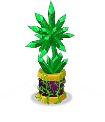

Building
In Dragon City, buildings are vital structures infused with ancient magic, each serving a unique purpose. From the Hatchery where eggs are nurtured, to the Breeding Mountain where new dragons are created, these enchanted buildings drive the growth and power of your dragon empire.
Farms
Farms are an essential building in Dragon City, as it serves as one of the player's main source of Food. Players can plant Crops by spending Gold, and when they eventually grow, they can be harvested for Food and XP. As the player levels up, upgrades for Farms are unlocked, which provides the player with greater varieties of Crops to plant.
Each Crop type in the Farm has a counterpart which are only accessible to players who are in an Alliances. These Crops cost the same in Gold and grants the same amount of XP as the original, but yield higher amounts of Food.
Food Farm
The heart of Dragon City, the Main Island is where your dragon journey begins. It’s home to essential structures like the Hatchery and Breeding Mountain, serving as the foundation for your growing dragon empire.
Big Food Farm
A larger, more efficient version of the Food Farm, the Big Food Farm produces greater amounts of food, allowing you to sustain more powerful dragons in your city.
Huge Food Farm
The Huge Food Farm is the ultimate agricultural hub in Dragon City. It generates vast amounts of food, ensuring your growing army of dragons is always well-fed and ready for battle!
Crystals
Crystals are a building in Dragon City, which affect dragons of the same type within a 10 and a half tiles radius and can be placed anywhere on the map. They grant a 20% increase in gold production for all dragons of the matching element in any Habitat within the radius. A dragon can receive boosts from multiple crystals, as they only need to have the same element as the crystal's element. Also, double element dragons will get twice the boost of the corresponding Crystal (since they have 2 times the same element). For example, the Double Terra Dragon and Double Flame Dragon will get 40% gold boost from a single "Terra Crystal" and "Flame Crystal", respectively. However, not all elements have their own crystal boost.
Terra Crystal
Flame Crystal

Sea Crystal

Nature Crystal
Electric Crystal
Ice Crystal
Metal Cyrstal
Dark Crystal
Legend Crystal
Breeding
The Breeding Building is a magical structure where dragons of different elements come together to create powerful new hybrids. Guided by ancient rituals, this mystical place is where new generations of dragons are born, each with unique traits and abilities.
Breeding Mountain
The Breeding Mountain is a legendary peak where dragons gather to combine their powers and produce rare hybrids. This towering structure is where many dragon masters first unlock the magic of dragon breeding.
Breeding Dome
A futuristic breeding facility, the Breeding Dome enhances the process of creating powerful dragons. Encased in a protective barrier, it optimizes breeding outcomes, helping to create stronger, rarer hybrids.
Breeding Sanctuary
The Breeding Sanctuary is a sacred site where only the most powerful dragons can breed. Its ancient energy allows for the creation of rare and legendary dragons, producing hybrids with extraordinary abilities.
Deus Breeding Nest
Deus Breeding Nest is a mystical place gifted by the great god Deus himself. This nest is imbued with divine power, granting the dragons who breed here a higher chance of producing extraordinary offspring.
Deus Vault
A secretive vault filled with legendary knowledge, the Deus Vault stores the ancient mysteries of dragon breeding. It holds the key to unlocking rare breeds, allowing players to tap into forgotten power.
Ultra Breeding Tree
The Ultra Breeding Tree is a magical tree of life, where dragons can breed under its enchanted branches. Its power allows the birth of rare and unique hybrids, combining elements in ways only the strongest dragon masters can access.